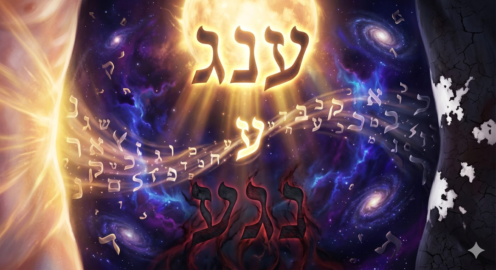
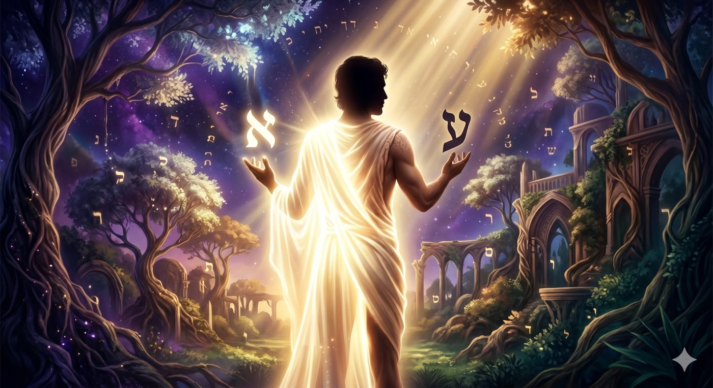
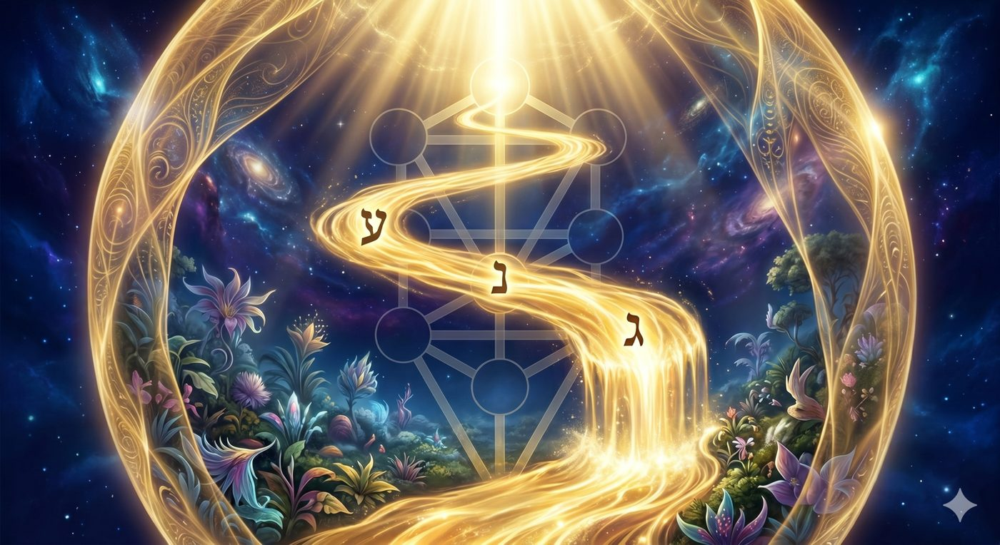
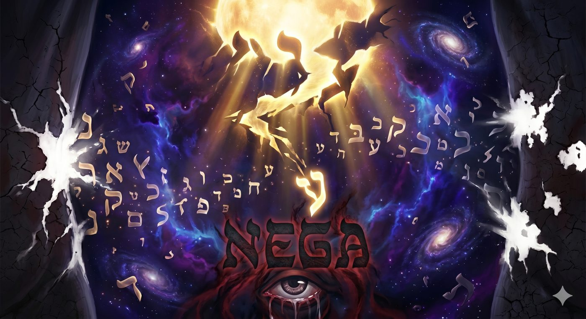
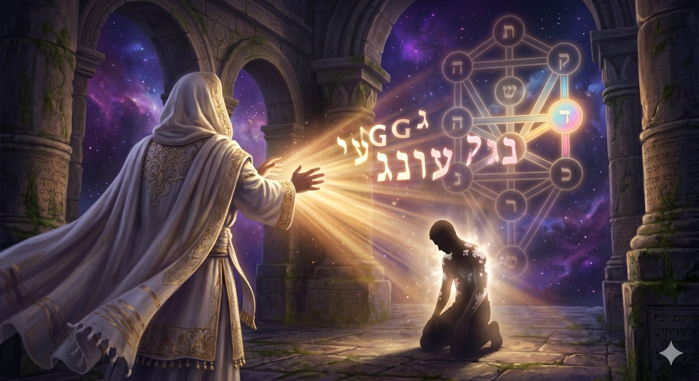
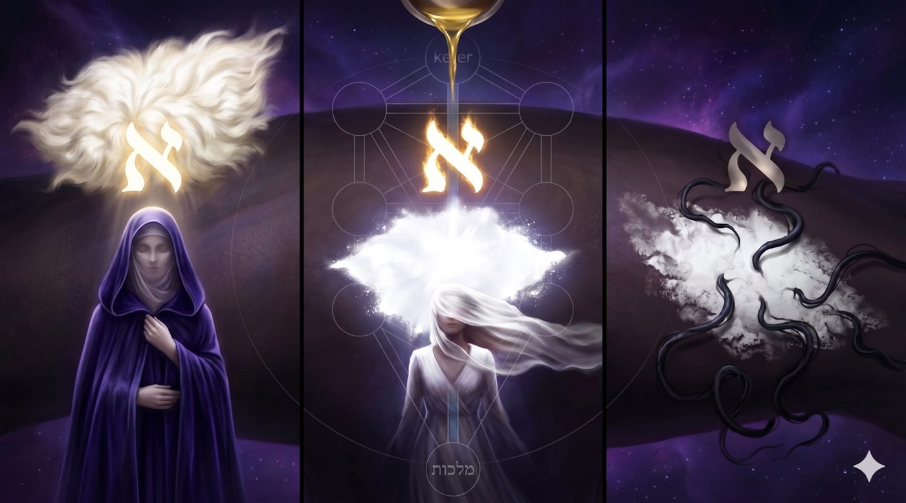
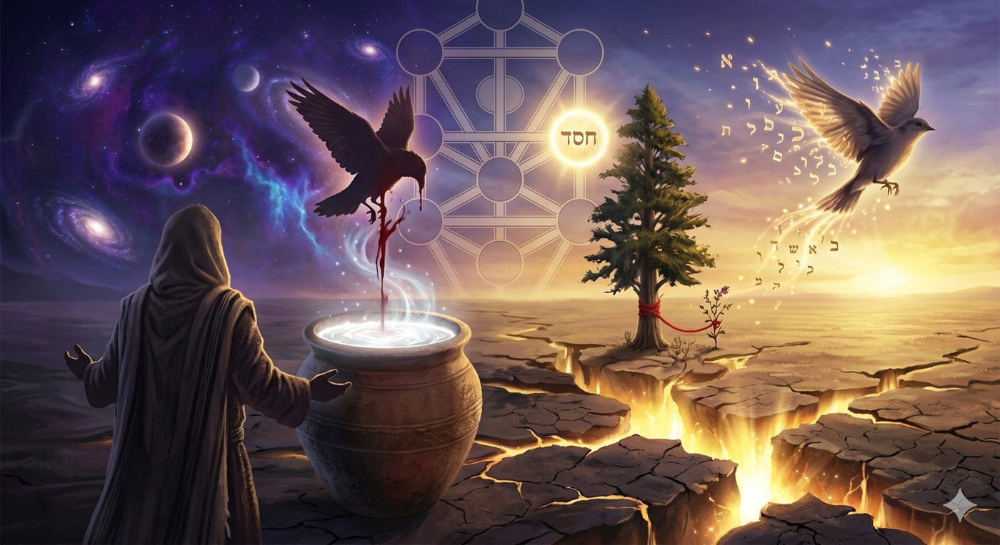
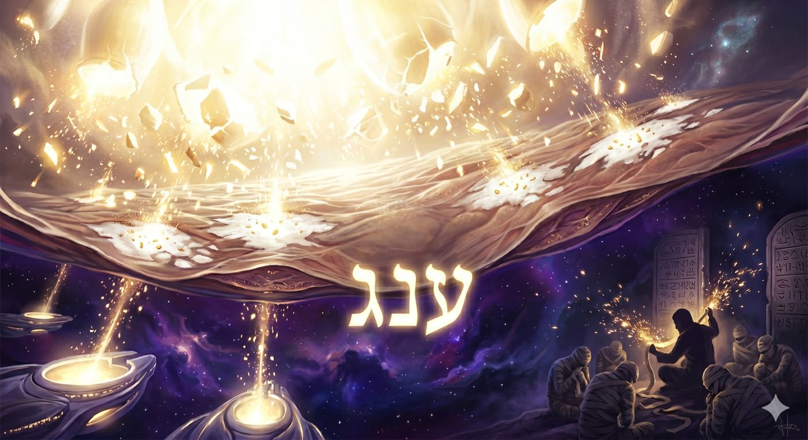
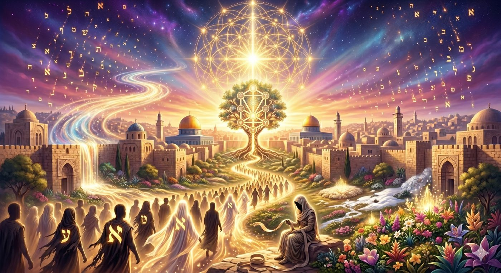

Ce que la Peau (Or/עור) a oublié de la Lumière (Or/אור)
Il existe dans l’hébreu biblique des phénomènes linguistiques d’une profondeur telle qu’ils ne sauraient relever de la simple coïncidence, mais dévoilent une architecture métaphysique sacrée inscrite dans la structure même des lettres par la Sagesse créatrice.
Parmi les plus vertigineux d’entre eux figure l’anagramme qui relie deux mots composés des trois mêmes consonnes hébraïques, Ayin (ע), Noun (נ) et Guimel (ג), et qui engendre pourtant les deux pôles les plus extrêmes de l’expérience humaine : Oneg (ענג), la délectation suprême, et Nega (נגע), l’affliction la plus abyssale.

Le Sefer Yetsira (2:4)1, l’un des plus anciens traités de la mystique juive, formule cette polarité avec une concision foudroyante : « Il n’y a rien de plus élevé que le Oneg, et rien de plus bas que le Nega ». Le même matériau constitutif, les mêmes lettres saintes, produisent l’extase édénique ou la lèpre spirituelle selon l’ordre dans lequel elles daignent s’agencer. Les parachiot de Tazria et Metsora, constituent le traité le plus circonstancié de la Torah sur la tsaraat (צרעת)2, cette affection miraculeuse et surnaturelle qui frappait la peau, les vêtements et les murs des habitations d’Israël. Loin de représenter un vestige archaïque de législation dermatologique, ces sections recèlent, selon l’unanimité des maîtres de la mystique juive, le protocole de réhabilitation de la faute originelle du premier homme Adam HaRishon, le premier metsora (lépreux) de l’histoire.
La Torah inaugure sa législation par un choix lexical qui ne saurait être fortuit : « Adam ki yihyé be’or bessaro… lé-nega tsaraat », « Lorsqu’un homme (Adam) aura dans la peau (or, עור) de sa chair… une affection de tsaraat » (Vayikra 13:2). Le mot Adam, et non Ich ou Enoch, renvoie au premier homme, et le mot עור Or (peau), qui traverse l’intégralité de ces deux parachiot, constitue l’épicentre du drame que nous nous proposons d’explorer.
L’objet de cette étude est d’examiner, avec l’aide du Ciel et de nos Maîtres, la dynamique profonde qui relie le Oneg originel du Jardin d’Éden, lorsque Adam était revêtu de Or (אור, lumière, avec un Aleph), à sa déflagration en Nega, lorsque cette lumière se mua en Or (עור, peau, avec un Ayin), et le processus de réhabilitation cosmique qui culminera, si D.ieu le veut, à l’ère messianique.
Nous nous appuierons sur les sources de la mystique juive (le Zohar3, le Pardès Rimonim de Rabbi Moché Cordovéro, les enseignements du Ari z"l4), de la Hassidout5 (le Sfat Emet, le Hiddouchei HaRim), et de la philosophie juive classique (le Maharal de Prague), afin de démontrer que la tsaraat n’est pas un châtiment arbitraire mais le cri de la peau (Or/עור) humaine qui porte encore la mémoire de la lumière (Or/אור) perdue, et que sa guérison annonce la restauration finale du flux édénique dans la totalité de la Création.
Plan du Chiour
La Lumière (Or/אור) du Premier Homme brisée dans sa Peau (Or/עור)
Du Aleph au Ayin : Quand la Lumière devint Peau (Kotnot Or)
La Lumière (Or/אור) qui irriguait le Jardin avant la faute : Eden, Nahar, Gan
La Peau (Or/עור) qui crie la Lumière (Or/אור) perdue
Le Serpent qui ternit la Lumière sous la Peau
Le Regard qui transperce la Peau pour retrouver la Lumière
Quand la Peau (Or/עור) parle : les Trois Blancheurs de la Lumière (Or/אור) brisée
L’Alchimie de la Purification : quand la Peau se souvient de la Lumière
Les Lumières du Tohou : la Peau (Or/עור) comme interface cosmique
La Peau redevenue Lumière : Le Mashia’h Metsora - lépreux
Le verset inaugural de la législation sur la tsaraat interpelle immédiatement l’exégète par la solennité de son vocabulaire : « Adam ki yihyé be’or bessaro », « Lorsqu’un Adam aura dans la peau (or, עור) de sa chair… » (Vayikra 13:2). Rappelons que la Torah dispose de quatre appellations pour désigner l’être humain, hiérarchisées en ordre décroissant de grandeur selon le Zohar (Tazria 48a) : Adam, Ich, Guéver et Enoch. Le choix du terme Adam, le plus élevé de tous, désignant selon le Zohar un être qui est shleimout d’koula (« la perfection de tout »)6, c’est-à-dire un individu contenant en lui l’ensemble des attributs séfirotiques, est a priori stupéfiant pour introduire une section traitant de l’affliction a priori, la plus dégradante qui soit.
Le Midrash Tan’houma et Vayikra Rabba (14:9), repris par Rachi, expliquent que cette désignation fait directement allusion à Adam HaRishon, le premier homme. De même que nous l’avons exposé dans notre étude sur la parachat Vayikra, où le terme Adam dans « Adam ki yakriv mikem korban » (Vayikra 1:2) renvoyait déjà au premier homme et au tikkoun7 de sa faute par le biais des sacrifices, ici la Torah révèle que la tsaraat est intrinsèquement liée à la fracture métaphysique provoquée par la faute d’Adam dans le Jardin d’Éden. L’acte de désobéissance d’Adam et Ève a généré une distance abyssale avec le Créateur, introduisant la mort, l’exil du Gan Eden, et le concept même du péché dans la trame de la Création. Le Lévitique se pose dès lors comme la réponse législative et thérapeutique au drame de la Genèse.

Mais le Zohar ajoute une dimension bouleversante. Si le metsora (le lépreux) est appelé Adam, c’est précisément parce que seul un être ayant atteint une stature spirituelle quasi parfaite peut être affligé de tsaraat. La tsaraat n’est absolument pas le châtiment du misérable, mais constitue le signal d’alarme envoyé à celui qui, ayant purifié la quasi-totalité de son être, conserve un « déchet » (pssolet) résiduel, localisé dans la couche la plus extérieure et la plus superficielle de son existence : la peau (Or/עור) de sa chair. Paradoxe saisissant, la tsaraat est un signe de grandeur, une affliction qui ne touche que les sommets, car seul celui qui se tient à la frontière de la perfection peut voir sa dernière impureté affleurer à la surface.
Adam HaRishon, le seul Homme à avoir été façonné par le Créateur lui-même, avant la faute, incarnait cette perfection. La tsaraat qui l’a frappé après sa désobéissance constitue la première manifestation historique de la distance entre ce qu’il était, un être de Lumière (Or/אור), et ce qu’il est devenu, un être de Peau (Or/עור).
Pour saisir la nature profonde de la tsaraat, il est impératif d’analyser la transformation ontologique qu’a subie Adam HaRishon au moment de la faute. Le texte de la Genèse énonce : « Et l’Éternel D.ieu fit pour Adam et pour sa femme des kotnot or (כתנות עור), des tuniques de peau, et Il les en revêtit » (Bereshit 3:21). Le Midrash Bereshit Rabba (20:12) rapporte une tradition célèbre au nom de Rabbi Meir, dont le Sefer Torah personnel comportait une variante graphique décisive : dans son rouleau, il était écrit kotnot or (כתנות אור) avec un Aleph (א), c’est-à-dire des tuniques de lumière, et non avec un Ayin (ע). Cette variante n’est pas une erreur de scribe, sans quoi le Sefer Torah de Rabbi Meir serait invalidé, mais dévoile l’état primordial de l’humanité avant la faute.
Le Zohar (Bereshit 36b) développe magistralement cette tradition : avant la faute, Adam et Ève étaient revêtus de vêtements de lumière céleste (Or/אור avec Aleph). Leur corps tout entier irradiait d’un éclat surnaturel, comparable, enseignent les Sages, à la lueur des ongles, raison pour laquelle, lors de la Havdala qui clôt le Shabbat, nous contemplons nos ongles à la lueur de la bougie, en souvenir de cet état primordial d’illumination que l’humanité possédait. Après la consommation du fruit de l’Arbre de la Connaissance du bien et du mal, ces vêtements de lumière se sont mués en vêtements de peau (Or/עור avec Ayin). L’homme a déchu d’un habit de Or (lumière) pure à un habit de Or (peau) matérielle.
Le Ari z"l, s’appuyant sur le Zohar, explique que la mutation du Aleph en Ayin n’est pas une simple métaphore poétique mais décrit un basculement structurel de la conscience humaine : le Aleph, lettre silencieuse symbolisant l’Infini, le Alouph shel Olam (le Maître du monde), cède la place au Ayin, lettre dont la valeur numérique est 70, renvoyant aux 70 facettes du monde matériel et aux 70 nations. L’homme, qui était transparent à la lumière divine, devient opaque, enfermé dans une enveloppe de chair dense.
Or, la tsaraat est précisément une affliction de la peau (Or/עור) parce qu’elle constitue la mémoire somatique de la lumière perdue. Le corps du metsora (du lépreux) « crie » à travers ses taches blanches l’éclat originel qui a été corrompu. Comme nous allons le voir, les taches blanches décrites dans la Torah de la tsaraat, se’et, sapa’hat, bahéret, sont des résurgences pathologiques de la blancheur de la lumière primordiale : une lumière qui, n’étant plus canalisée par la sainteté, se manifeste désormais de manière destructrice à la surface de cette peau devenue opaque.
La tsaraat est ainsi le négatif photographique des vêtements de lumière (Or/אור) d’Adam : la même énergie, inversée, qui affleure à la surface d’une peau (Or/עור) devenue opaque. L’Or (avec un Ayin) crie l’Or (avec un Aleph).
Pour saisir la profondeur de l’anagramme Oneg/Nega, il nous faut revenir au texte fondateur du Jardin d’Éden. « Et un fleuve (Nahar, נהר) sortait d’Éden (עדן) pour arroser le jardin (Gan, גן) » (Bereshit 2:10). Ce verset, d’apparence géographique, recèle selon le Sfat Emet (sur Tazria) et le Sidouro shel Chabbat, le secret de l’architecture du Oneg, du plaisir authentique.
Le mot Oneg (ענג) est composé de trois lettres qui sont les initiales de trois réalités : ע = Eden (עדן), la source transcendante, le réservoir de la volonté divine, la dimension la plus intérieure du Keter8 (la Couronne suprême, l’émanation la plus haute). נ = Nahar (נהר), le fleuve, le canal de transmission (le Yessod, le canal). Et ג = Gan (גן), le jardin, le réceptacle, le monde concret où la lumière (Or/אור) est destinée à se manifester, à fleurir et à porter du fruit (la Malh’out, la royauté qui s’inscrit dans le concret).

Le Oneg véritable n’est donc pas un simple plaisir sensoriel. Il est l’expérience intérieure qui se produit lorsque le flux de la lumière (Or/אור) divine circule sans obstruction depuis sa source (Eden), à travers le canal de transmission (Nahar), jusqu’à son épanouissement dans le monde (Gan). Le Oneg du Shabbat, « Ve-karata la-Shabbat Oneg » (« Et tu appelleras le Shabbat une délectation », Yéchayahou 58:13), constitue un avant-goût hebdomadaire de cet état primordial, une brèche dans l’opacité de la peau (Or/עור) du monde par laquelle la lumière (Or/אור) originelle affleure de nouveau.
La Hassidout approfondit cette structure en l’appliquant aux trois dimensions de l’âme humaine : Eden correspond à la Nechama (l’âme supérieure), racine transcendante connectée à D.ieu, source de toute lumière intérieure. Nahar correspond au Roua’h (le souffle de l’esprit), le souffle, la parole, le canal par lequel la lumière se transmet. Gan correspond au Néfech (l’âme vitale), le domaine de l’action concrète, du corps, de la peau (Or/עור). Lorsque la Nechama infuse le Roua’h de lumière divine, et que celui-ci irrigue le Néfech pour l’élever, l’homme vit dans le Oneg : sa peau (Or/עור) est alors transparente à sa lumière (Or/אור).
C’était l’état d’Adam HaRishon avant la faute : un être dont l’Eden intérieur, la Lumière (Or/אור), irriguait librement le Gan de son existence, la Peau (Or/עור) de son monde. Les deux Or ne faisaient qu’un.
Le Nega (נגע) est composé des mêmes lettres que le Oneg, mais dans un ordre bouleversé : Noun-Guimel-Ayin au lieu de Ayin-Noun-Guimel. Cette inversion constitue, selon le Pardès Rimonim de Rabbi Moché Cordovéro et le Hiddouchei HaRim (le premier Admour de la dynastie des hassidim de Gour), la cartographie exacte de la corruption du flux de lumière (Or/אור) édénique.

Dans le Oneg, le Ayin (ע), représentant Eden, la source transcendante, se tient en tête. C’est l’Eden qui initie le mouvement, qui propulse le Nahar (נ) vers le Gan (ג). La source dirige le flux : la Lumière commande. Dans le Nega, le Ayin (ע) est relégué en dernière position. Le mouvement commence par le Noun (נ), le Nahar, le canal, suivi du Guimel (ג), le Gan, et seulement ensuite le Ayin (ע), l’Eden, qui arrive en dernier. Le Nahar coule vers le Gan, mais il ne puise plus dans l’Eden. La parole fonctionne encore, mais elle ne transporte plus rien de transcendant. La peau (Or/עור) existe encore, mais elle ne véhicule plus aucune lumière (Or/אור).
Le Hiddouchei HaRim propose une lecture éblouissante du verset : « HaNega lo hafakh et eyno », littéralement « l’affliction n’a pas changé son apparence » (Vayikra 13:55). Il lit : l’affliction n’a pas retourné son Ayin (son œil, son regard). La différence entre Nega et Oneg, entre l’affliction de la peau et la délectation de la lumière, réside tout entière dans le placement du Ayin, de l’œil, du regard intérieur. Celui qui place son regard en tête, qui contemple le monde depuis la perspective de l’Eden, vit dans le Oneg : sa peau (Or/עור) est irradiée de lumière (Or/אור). Celui dont le regard est relégué à la fin vit dans le Nega : sa peau se couvre de taches.
C’est exactement ce qui advint lors de la faute d’Adam. En écoutant le Serpent, Adam a inversé l’ordre des lettres de son existence. Il a cessé de canaliser l’Eden vers le Gan. Le Oneg édénique s’est effondré en Nega, la Lumière (Or/אור) s’est épaissie en Peau (Or/עור), et la tsaraat est apparue sur le corps du premier homme.
Le Talmud (Arah’in 15b-16a) énumère sept fautes susceptibles de provoquer la tsaraat, parmi lesquelles le Lashon Hara (la médisance) occupe une place cardinale. L’étymologie populaire du lépreux, le metsora (מצורע) en fait la contraction de motsi ra (מוציא רע), « celui qui fait sortir le mal » par sa bouche et le parallèle avec la faute originelle est saisissant.
Dans le Jardin d’Éden, la première manifestation du mal a pris la forme d’une parole : celle du Serpent. « Le Serpent était le plus rusé de tous les animaux des champs… et il dit à la femme : D.ieu a-t-Il vraiment dit ? » (Bereshit 3:1). Le Serpent est le premier praticien du Lashon Hara de l’histoire, il parle mal de D.ieu devant Ève, il déforme la parole divine, et il insinue que la volonté du Créateur est motivée par la jalousie. La parole du Serpent est l’archétype même du Nega : un Nahar (un flux de parole) qui coule vers le Gan (vers l’action concrète) sans être connecté à l’Eden (la vérité divine). Elle épaissit la peau (Or/עור) au lieu d’y faire transparaître la lumière (Or/אור).
C’est pourquoi le Hafets ’Haïm enseigne que le Lashon Hara n’est pas simplement une faute parmi d’autres mais la répétition structurelle de la faute originelle. Chaque fois qu’un être humain use de la parole pour médire, calomnier ou semer la discorde, il reproduit le mécanisme exact du Serpent : il corrompt le Nahar (la parole) en le détournant de l’Eden (la vérité). Le Talmud enseigne d’ailleurs que la guematria9 (valeur numérique) de l’expression lo telekh rak’hil be’ameh’a (« Tu ne colporteras pas de ragots dans ton peuple », Vayikra 19:16) est identique à celle de nega tsaraat (נגע צרעת) : 883. La faute et sa conséquence portent exactement la même empreinte numérique.
Le Lashon Hara est le venin du Serpent originel qui continue d’épaissir la Peau (Or/עור) du monde et d’en obscurcir la Lumière (Or/אור). Chaque parole médisante ajoute une couche d’opacité à l’enveloppe de l’humanité, chaque parole de vérité en dissout une.
La Torah prescrit que le metsora soit conduit devant Aharon HaCohen ou l’un de ses fils (Vayikra 13:2). Pourquoi le Cohen ? Pourquoi pas un juge (dayan), un sage (hakham) ou un prophète (navi) ? La réponse réside dans la nature des attributs divins du Cohen et dans la mécanique profonde de la transformation de la Peau (Or/עור) en Lumière (Or/אור).
Aharon HaCohen est, dans la topographie de l’arbre des Sefirot, l’incarnation du Hessed10 suprême, l’amour inconditionnel, la bonté expansive. Les Pirké Avot (1:12) le décrivent comme celui qui « aime les créatures et les rapproche de la Torah » (ohev et ha-briot ou-mekarvane la-Torah). Le Zohar (Tazria 48a) explique que le Cohen, en tant que canal du Hessed, possède la capacité unique de « retourner le Ayin », c’est-à-dire de remettre la lettre Ayin (l’Eden, la source) en tête du mot, transformant le Nega (נגע) en Oneg (ענג), la Peau (Or/עור) opaque en Lumière (Or/אור) transparente.

Le Pardès Rimonim précise que le Nega est l’aspect extérieur (hitsoniyout) du Keter, tandis que le Oneg en est l’aspect intérieur (pnimiyout). Les deux sont des manifestations de la même énergie divine, exactement comme la Lumière (Or/אור) et la Peau (Or/עור) sont constituées des mêmes lettres, à une lettre silencieuse près. Le rôle du Cohen est d’agir comme catalyseur permettant à l’énergie de la tsaraat, une lumière suprême tombée dans la klipa11 (l’écorce d’impureté), d’être réintégrée dans la sainteté.
Le Sfat Emet ajoute une dimension existentielle lumineuse : Aharon est celui qui voit le bien en chaque être. Son regard est un Ayin Tova (« bon œil »), l’exact contraire de la tsarout ayin (étroitesse du regard) qui, selon Arah’in 16a, est l’une des causes de la tsaraat. Le Cohen regarde le metsora non pour juger l’apparence extérieure de sa peau (Or/עור), mais pour percevoir, à travers les taches, l’étincelle de lumière (Or/אור) originelle qui cherche à remonter à la surface.
C’est la raison pour laquelle la Halah’a interdit à un Cohen dépourvu de bonté de prononcer le verdict sur la tsaraat. Seul un regard imprégné de Hessed, un regard de Lumière (Or/אור), peut voir, au-delà de l’affliction de la Peau (Or/עור), la promesse de la réhabilitation.
La Torah ne se contente pas de décrire la tsaraat comme une affliction générique. Elle distingue avec une précision chirurgicale trois types de lésions : Se’et (שאת), Baheret (בהרת) et Sapa’hat (ספחת). Pour comprendre cette distinction, il faut se rappeler que la mystique juive conçoit l’être humain comme un « temple intérieur » doté de trois « vêtements » par lesquels l’âme s’exprime dans le monde : la pensée (ce que nous méditons dans notre for intérieur), la parole (ce que nous disons), et l’action (ce que nous faisons concrètement). Ces trois vêtements sont les canaux par lesquels la lumière (Or/אור) de l’âme se manifeste à travers la peau (Or/עור) du monde. Chacune des trois plaies correspond à la corruption d’un de ces canaux.
Pour le dire plus simplement12 : imaginons que notre âme est un soleil intérieur, et que ses rayons traversent trois filtres successifs avant d’atteindre le monde extérieur. Le premier filtre est la pensée : c’est là que nous formons nos intentions. Le deuxième est la parole : c’est là que nous communiquons avec autrui. Le troisième est l’action : c’est là que nous agissons dans le monde concret.
Lorsque ces trois filtres sont purs et alignés, la lumière de l’âme se transmet sans distorsion et la peau du monde « brille ». Mais lorsque l’un de ces filtres se déforme, la lumière se bloque, et c’est précisément ce blocage qui se manifeste sur la peau sous forme de tache blanche, de tsaraat. Chaque type de tache révèle quel filtre est endommagé. Le Ets ’Haïm (Sha’ar Leah ve-Ra’hel, chapitre 7) du Ari z"l établit des correspondances précises entre ces trois plaies et les Partzufim feminins détenteurs de la rigueur.
Le Ets ’Haïm explique que les plaies de la Tsara’at sont le résultat d'une descente incontrôlée des "jugements puissants" (Dinim Tikkuphim) depuis ces dimensions supérieures vers la peau. la plaie Se’et correspond à Léa, figure biblique qui incarne dans les mondes supérieures le monde féminin caché de la pensée (Mah’shava), tandis que les plaies Baheret et Sapa’hat correspondent à Ra’hel, figure du monde féminin révélé, c’est-à-dire la parole (Dibour) et l’action (Ma’assé).
Cette distinction repose sur un concept central appelé le mystère des Trois Alphin (אלפין). Pour bien comprendre, rappelons que la lettre Aleph (א) est composée graphiquement d’un Vav diagonal et de deux Youd (un en haut, un en bas). Sa valeur numérique est donc de 26 (10+6+10), exactement égale à celle du Tétragramme (י-ה-ו-ה), le Nom sacré de D.ieu. Cela signifie que chacun des trois vêtements de l’âme (pensée, parole, action) porte en lui l’empreinte du Nom divin.

Tant que ces trois Aleph reçoivent leur « huile d’onction », c’est-à-dire tant que la connexion au divin (par la Torah, la prière et les mitsvot) est maintenue, tout est lumineux. Mais lorsqu’un individu s’adonne à l’orgueil ou à la médisance, cette huile spirituelle se retire. Privées de leur vitalité, les structures de Léa et Ra’hel se dessèchent, et les lumières qu’elles contiennent « gèlent » et blanchissent, se manifestant sur la peau (Or/עור) sous forme de taches.
Examinons chacune de ces trois blancheurs. Se’et provient de la racine lassé’et, signifiant « élever » ou « soulever ». C’est la plaie de celui qui se croit au-dessus des autres. Elle naît dans le monde de la pensée, là où l’on forge secrètement l’image de sa propre supériorité. Le Ets’Haïm l’associe à Léa car Léa symbolise la dimension cachée de l’expérience : le monde intérieur de la pensée, invisible mais déterminant. Lorsqu’une personne nourrit secrètement un sentiment de supériorité, cette Gassout HaRoua’h (גסות הרוח, l’arrogance de l’esprit) crée une « élévation » fallacieuse dans son âme qui se traduit par une tache blanche légèrement surélevée sur la peau, comparable à la densité de la laine propre. Le premier filtre de l’âme, la pensée, est encrassé.
Baheret dérive de la racine bahir, signifiant « clair » ou « brillant ». C’est la plus intense des blancheurs, comparée à l’éclat de la neige. Elle est la plaie de celui qui détourne la parole de sa vocation sacrée. La parole, qui devrait servir à éclairer, à encourager et à unir, est ici utilisée pour brûler et séparer. Le Lashon Hara est l’archétype de cette corruption. Le Ets’Haïm souligne que la blancheur de la Baheret est « plus profonde que la peau », ce qui signifie, spirituellement, que la clarté intellectuelle de l’individu n’a pas été intégrée dans le cœur : elle s’est extériorisée de manière destructrice. La lumière (Or/אור) est devenue arme au lieu de bénédiction. Le deuxième filtre, la parole, est corrompu.
Sapa’hat vient du mot safah’, signifiant « joindre » ou « annexer ». Contrairement aux deux précédentes, elle n’est pas une plaie primaire mais ce que les Sages appellent une « descendante » (toldot), une adjonction. Elle représente le stade le plus dangereux : celui où le mal n’est plus seulement une pensée fugace ou une parole isolée, mais où il a pris racine dans le comportement quotidien sous forme d’habitude. La mauvaise action, répétée,
s’« annexe » au caractère de la personne comme un parasite. C’est l’interface où les forces d’impureté (Klipot) commencent à se nourrir de la lumière divine piratée. Le troisième filtre, l’action, est contaminé. La contagion s’étend aux domaines périphériques de la vie : les relations, le foyer, le travail.
Les trois blancheurs de la tsaraat ne sont donc pas des pathologies indifférenciées. Elles constituent trois diagnostics précis de l’âme, adressés à chacun de nous : le premier interroge nos pensées secrètes (sommes-nous humbles ?), le deuxième interroge nos paroles (servent-elles à édifier ou à détruire ?), le troisième interroge nos habitudes (le mal s’est-il installé dans notre quotidien ?). Trois manières dont la Lumière (Or/אור), privée de son Huile d’Onction, se fige et blanchit à la surface de la Peau (Or/עור).
La paracha de Metsora détaille le rituel de purification une fois que la plaie est guérie. Ce processus, loin d’être un simple cérémonial d’hygiène, constitue une véritable opération alchimique de l’âme, une rectification (tikkoun) minutieuse des défauts de caractère ayant conduit à l’affliction. Chaque élément du rituel, deux oiseaux vivants, du bois de cèdre, de la laine écarlate, de l’hysope et de l’eau vive, correspond à une dimension précise de la restauration du flux de lumière (Or/אור) à travers la peau (Or/עור).
Le Cèdre et l’Hysope. Le cèdre (erez, ארז) est le plus haut des arbres, incarnation de l’orgueil et de la grandeur ; l’hysope (ezov, אזוב) est la plus humble des plantes. La purification exige de lier les deux : l’individu doit abaisser son ego (le cèdre) au niveau de l’humilité (l’hysope). Le cèdre représente la peau (Or/עור) épaissie par l’orgueil ; l’hysope représente la lumière (Or/אור) de l’annulation de soi devant le Créateur.
Les Deux Oiseaux. Le Ets’Haïm et le Zohar expliquent que les deux oiseaux correspondent aux deux « oiseaux » de la connaissance (Daat) qui résident dans le principe féminin. L’oiseau égorgé représente le jugement qui doit être rectifié par la mort, c’est-à-dire par le sacrifice de l’ego ; l’oiseau libéré dans les champs symbolise la parole purifiée qui peut à nouveau s’élever vers le divin. Rabbi ’Haïm ibn Attar (Or Ha’Haïm) ajoute que ces deux oiseaux font allusion aux deux Messies : Mashia’h ben Yossef et Mashia’h ben David, suggérant que la purification du metsora est une micro-préfiguration de la rédemption finale.
L’Eau Vive et le Vase de Terre. L’oiseau est égorgé au-dessus d’un vase de terre contenant de l’eau de source (mayim h’ayim, מים חיים). L’eau vive symbolise la Sefira de Ho’hma (Sagesse), qui purifie par l’annulation du soi, tandis que le vase de terre rappelle à l’homme sa fragilité physique. La rencontre de l’eau céleste et du réceptacle terrestre reconstitue le circuit brisé : la lumière (Or/אור) de la Sagesse coule à nouveau dans le vaisseau de la peau (Or/עור).

Enfin, le rôle du Cohen dans ce rituel s’éclaire d’une lumière nouvelle. Sa fonction est d’opérer l’Hamtakat HaDinim13 (l’adoucissement des jugements) : puisque la tsaraat provient de jugements extrêmement sévères ancrés dans la sainteté, seul un niveau de sainteté supérieur peut les « adoucir ». En prononçant le mot « Tahor » (טהור, pur), le Cohen connecte la plaie à sa source dans le monde du Hessed, transformant le Nega en Oneg, la Peau (Or/עור) en Lumière (Or/אור).
Le rituel de purification du metsora n’est pas une cérémonie folklorique. Il est l’alchimie métaphysique par laquelle la Peau (Or/עור), durcie par l’orgueil et la médisance, se souvient qu’elle fut Lumière (Or/אור). Le cèdre s’incline devant l’hysope, l’oiseau mort emporte la parole mauvaise, l’eau vive coule de nouveau dans le vase de terre, et le Cohen prononce le mot qui retourne le Ayin : Tahor.
Le Ets’Haïm révèle également une dimension de la tsaraat qui dépasse le cadre de la faute individuelle. La tsaraat est comprise comme une manifestation physique miraculeuse d’un déséquilibre métaphysique profond : un surplus de lumières (Or/אור) provenant du monde de Tohou14 (le Chaos) qui, faute de récipients adéquats dans le monde de Tikkoun (la Réparation), débordent et se manifestent sous forme de jugements sévères sur l’enveloppe extérieure de l’homme. Cette révélation est capitale. Elle signifie que la tsaraat n’est pas, à sa racine, une impureté. Elle est une lumière trop intense pour le réceptacle qui devrait la contenir.
Le mécanisme central de cette chute passe par la parole. Le Ets’Haïm décrit ce que la Zohar appelle l’Union des Baisers (Zivug de-Neshikin)15, où les facultés intellectuelles sont parfaitement alignées avec l’expression orale. Le souffle qui sort de la bouche est imprégné de paroles de Torah, créant un lien d’intimité entre l’homme et D.ieu. La peau (Or/עור) de celui qui vit dans cet état est un véritable vêtement de lumière (Or/אור). Le Lashon Hara, en revanche, brise cet alignement. La parole devient un conduit pour les jugements sévères, et la tsaraat est le signe visible que la protection spirituelle de la parole a été rompue.
La gravité du Lashon Hara prend ici une dimension structurelle : Le Talmud (Arah’in 15b) sur le fait que la médisance est plus grave que l’idolâtrie, l’adultère et le meurtre combinés. La raison en est précise : celui qui médit détruit trois personnes, celui qui parle, celui qui écoute et celui dont on parle. En d’autres termes, pour le Ets Haim, la médisance détruit les canaux entre les attributs divins, empêchant la lumière de Hessed de tempérer la Gevoura, la Gevoura de cadrer le Hessed,…. Il en résulte une accumulation de rigueurs non adoucies qui se manifestent par les « plaies de l’homme » (Nig’ei Adam, נגעי אדם) sur sa peau.
Mais l’enseignement ultime de Le Ets’Haïm est eschatologique. Dans l’ère messianique, la tsaraat ne sera plus vue comme une impureté mais elle révélera les lumières les plus supernales (anciennes et supérieures) qui étaient auparavant cachées. La rédemption finale consistera en l’intégration totale de ces lumières intenses dans des corps humains purifiés. La peau humaine (Or/עור), actuellement voile opaque, redeviendra vêtement de lumière (Or/אור), tel qu’il était avant la faute d’Adam.
L’enseignement du Ets’Haïm transforme une section apparemment archaïque de la Torah en un traité de psychologie métaphysique. Notre peau (Or/עור) n’est pas une barrière inerte, mais une interface dynamique sensible à notre état spirituel. Par la parole juste et l’humilité, l’homme peut restaurer l’harmonie entre sa pensée, sa parole et son action, transformant l’affliction (Nega) en délice divin permanent (Oneg), la Peau (Or/עור) en Lumière (Or/אור).
Le Talmud (Sanhedrin 98b) rapporte un enseignement vertigineux. Les disciples de Rabbi Yéhochoua ben Lévi demandent : « Quel est le nom du Mashia’h16 ? » L’école de Rabbi Yéhouda HaNassi répond avec une audace singulière : « Son nom est ’Hivra (le lépreux), comme il est dit : “Il a porté nos maladies et enduré nos souffrances, et nous l’avons considéré comme un lépreux, frappé par D.ieu” (Yéchayahou 53:4). » Le Mashia’h lui-même porte le titre de « lépreux », de metsora.
Le Zohar explique la Guemara (Sanhedrin 98a) qui enseigne que le Mashia’h « siège aux portes de Rome parmi les lépreux », défaisant et refaisant ses bandages un à un. Chaque bandage qu’il dénoue représente une couche de Peau (Or/עור) opaque, une klipa d’impureté, qu’il pèle du corps collectif d’Israël. Chaque bandage qu’il renoue représente la réintégration d’une étincelle de Lumière (Or/אור) dans le circuit édénique.

Cette identification constitue la clé de voûte de l’édifice que nous avons bâti. Si Adam HaRishon est le premier metsora de l’histoire, le Mashia’h en est le dernier. La boucle de la réhabilitation se referme en une symétrie parfaite : celui qui a inauguré le Nega par sa faute, celui dont la Lumière (Or/אור) s’est épaissie en Peau (Or/עור), est racheté par celui qui assume le Nega du monde entier pour le transmuter définitivement en Oneg.
Le Maharal de Prague, dans son Netsah Israël, enseigne que la Gueoula (Rédemption) finale sera le rétablissement de l’état d’avant la faute : le retour des kotnot or avec Aleph (les vêtements de Lumière), la restauration du Oneg dans sa plénitude, la réconciliation de la Peau (Or/עור) avec la Lumière (Or/אור) qu’elle était originellement destinée à véhiculer. En ce jour, la tsaraat n’existera plus, car il n’y aura plus de distance entre la surface et la profondeur, entre le Nega et le Oneg.
Adam, le premier metsora, sera réhabilité par le Mashia’h, le dernier metsora. Le Nega cosmique deviendra le Oneg éternel. La Peau (Or/עור) redeviendra Lumière (Or/אור). Le Aleph silencieux reprendra enfin sa place devant le Ayin.
L’étude des parachiot Tazria-Metsora, révèle une cohérence éblouissante qui traverse les quatre niveaux d’interprétation de la Torah17 : du Pshat au Sod. Au niveau du Pshat, la tsaraat est une affection de la peau (Or/עור) qui nécessite l’examen du Cohen. Au niveau du Drach, elle est la conséquence du Lashon Hara, un appel impérieux à la Téchouva18. Au niveau du Remez, elle est liée à la faute d’Adam et à la transformation des vêtements de Lumière en vêtements de Peau. Au niveau du Sod, elle est la manifestation extérieure d’une lumière suprême, celle du Oneg édénique, qui affleure à la surface de la peau sous forme de Nega, attendant d’être réintégrée dans le circuit de la sainteté.
Mais l’enseignement de ces parachiot ne saurait demeurer dans le domaine de la spéculation intellectuelle. Il exige de nous une réponse concrète, quotidienne, dans notre avodat Hachem (notre service de D.ieu). Car si la tsaraat n’existe plus aujourd’hui sous sa forme miraculeuse, les mécanismes spirituels qu’elle révèle, eux, demeurent parfaitement opérants. Chaque matin, au réveil, nous sommes confrontés au même choix qu’Adam : placer le Ayin en tête ou le reléguer à la fin. Commencer la journée par la tefila, par la bénédiction Modé Ani, c’est replacer l’Eden au commencement, c’est irriguer notre Nahar de lumière avant qu’il ne se déverse dans le Gan de nos activités. C’est choisir le Oneg contre le Nega.
Les trois vêtements de l’âme, la pensée, la parole et l’action, nous offrent chaque jour trois opportunités de réparation. Dans la pensée, cultiver l’humilité véritable, celle qui reconnaît que chaque talent est un dépôt du Créateur et non une possession personnelle : c’est guérir la Se’et. Dans la parole, s’exercer à ne dire que du positif qui édifie, qui rapproche, qui répare : c’est guérir la Baheret. Dans l’action, veiller à ce que nos habitudes quotidiennes ne deviennent pas des prisons mais restent des vecteurs de sainteté : c’est guérir la Sapa’hat. Trois combats quotidiens, trois victoires possibles, trois manières de transformer un peu de Nega en Oneg.
C’est le sens profond de l’enseignement des Sages : « Là où se tiennent les Baalei Téchouva (les repentis), même les Justes parfaits ne peuvent se tenir » (Berahot 34b). Car le Oneg du Baal Téchouva est un Oneg qui a traversé le Nega, qui l’a intégré, qui l’a retourné de l’intérieur. C’est un Oneg plus vaste, plus lumineux, car il contient en lui la mémoire de l’exil et la puissance de la rédemption. Sa Peau (Or/עור) ne fait plus écran à la Lumière (Or/אור) ; elle en devient le réceptacle le plus fidèle.
Que cette Emouna (confiance) nous habite : aucune chute n’est définitive, aucune opacité n’est irréversible. Si la Torah consacre deux parachiot entières à la tsaraat, c’est précisément pour nous enseigner que D.ieu a déjà prévu le remède avant la maladie. Le Cohen est là. L’eau vive est là. L’oiseau est prêt à s’envoler. Et chaque Shabbat, en goûtant le Oneg Shabbat, nous touchons du doigt, l’espace d’un instant, la lumière d’avant la faute : la promesse que la Peau du monde entier redeviendra Lumière.
« קומי אורי כי בא אורך וכבוד ה' עליך זרח »
« Lève-toi, resplendis, car ta lumière est venue, et la gloire de l’Éternel s’est levée sur toi. »
(Isaïe 60:1)
Yehi Ratson, que telle soit la volonté du Ciel, de replacer le Ayin en tête du mot, pour transformer tout Nega en Oneg, et qu’il nous restitue les vêtements de Lumière (Or/אור) d’Adam HaRishon.
Chabbat Chalom !
Rédigé par B.A. le 28 Nissan 5786 à Saint Mandé

Torah et Tanakh
Talmud Bavli
Midrash
Zohar
|
Mystique juive
Hassidout
Philosophie juive et commentateurs
|
|---|
Sefer Yetsira (Livre de la Formation) : l’un des plus anciens traités de la mystique juive, attribué par la tradition à Abraham. Il expose les principes de la Création par les lettres hébraïques et les dix Sefirot (émanations divines).↩︎
Tsaraat (צרעת) : affection surnaturelle décrite dans le Lévitique, improprement traduite par « lèpre ». Elle se manifestait sous forme de taches blanches sur la peau, les vêtements ou les murs des habitations. Les Sages enseignent qu’elle n’était pas une maladie naturelle mais un signal spirituel envoyé par le Ciel, principalement en réponse à la médisance (Lashon Hara).↩︎
Zohar (Livre de la Splendeur) : œuvre maîtresse de la Kabbale, attribuée à Rabbi Chimone bar Yo’haï (IIe siècle). Commentaire mystique révélant les dimensions cachées (Sod) du texte biblique.↩︎
Ari z"l : Rabbi Its’hak Louria (1534 à 1572), maître fondateur de la mystique de Safed. Ses enseignements, transmis par Rabbi ’Haïm Vital dans le Ets ’Haïm (Arbre de Vie), constituent le socle de la mystique juive moderne.↩︎
Hassidout : courant mystique du judaïsme fondé au XVIIIe siècle par le Baal Chem Tov, mettant l’accent sur la joie, l’intériorité et l’accès de chaque Juif aux dimensions profondes de la Torah.↩︎
Sefirot : les dix émanations par lesquelles D.ieu Se manifeste dans la Création. De haut en bas : Keter (Couronne), Hokhma (Sagesse), Bina (Intelligence), Hessed (Bonté), Guevoura (Rigueur), Tiféret (Harmonie), Netsah (Victoire), Hod (Splendeur), Yessod (Fondement), Malkhout (Royauté).↩︎
Tikkoun (תיקון) : « réparation ». Concept central de la Kabbale lourianique désignant la restauration des mondes spirituels brisés lors de la Chevirat HaKelim (Brisure des Réceptacles).↩︎
Keter (כתר, Couronne) : la plus élevée des dix Sefirot. Le Oneg (délectation) en constitue la dimension intérieure, le Nega (affliction) en est la face extérieure dévoyée.↩︎
Guematria : méthode consistant à calculer la valeur numérique des mots hébreux pour révéler des connexions cachées entre des termes de même valeur.↩︎
Hessed (חסד) : la bonté, l’amour inconditionnel. Quatrième Sefira, située du côté droit de l’Arbre de Vie. Aharon HaCohen en est l’incarnation.↩︎
Klipa (pl. Klipot) : « écorce ». Forces d’impureté qui enveloppent et dissimulent les étincelles de sainteté.↩︎
Concrètement, imaginons trois cercles concentriques. Le cercle intérieur représente nos pensées les plus profondes (Se’et/Léa). Le cercle médian représente nos paroles (Baheret/Ra’hel). Le cercle extérieur représente nos actions quotidiennes (Sapa’hat/Ra’hel). Lorsque l’Huile de l’Onction (la connexion au divin) irrigue ces trois cercles, tout est lumineux. Lorsqu’elle se retire, chaque cercle produit sa propre « tache blanche », signal spécifique d’un désordre particulier.↩︎
Hamtakat HaDinim (« Adoucissement des Jugements ») : processus par lequel les rigueurs divines sont tempérées en bonté grâce à une force de sainteté supérieure. Le Cohen en est le véhicule.↩︎
Tohou (תהו) : le monde du Chaos, premier stade de la Création où les lumières étaient trop intenses pour les réceptacles, provoquant la Brisure. Le Tikkoun (Réparation) est le stade où ces lumières sont réintégrées.↩︎
Zivug de-Neshikin (« Union des Baisers ») : alignement parfait entre les facultés intellectuelles et l’expression orale. Le souffle sort imprégné de Torah, créant un lien intime entre l’homme et D.ieu.↩︎
Mashia’h (משיח) : « l’Oint ». Descendant de David dont la venue inaugurera la rédemption finale et la reconstruction du Temple.↩︎
Pshat, Remez, Derach, Sod : les quatre niveaux d’interprétation de la Torah formant le mot Pardès (Verger). Pshat = littéral ; Remez = allusion ; Derach = homélétique ; Sod = mystique.↩︎
Téchouva (תשובה) : « retour ». Mouvement existentiel de réorientation de l’âme vers D.ieu et de retour à la proximité originelle avec le Créateur.↩︎